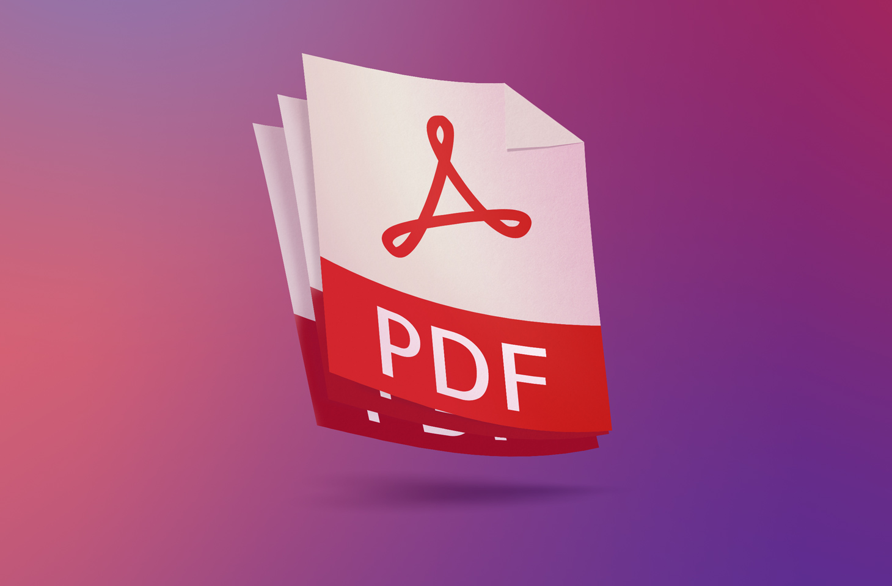

Por qué buscáis entre los
muertos al que vive?
Lucas 24:5
Nuestra misión en el mundo
Sobre nosotros
El curso de Tiempo de Cosecha, es especialmente diseñado para la enseñanza de distancia de dos años de duración para pastores, plantadores de iglesias, evangelistas y misioneros - en particular aquellos de una persuasión Carismática o Pentecostal. Se enseña en más de 50 países.
Es diseñado para ser un "colegio Bíblico de bajo costo con todas los formularios, módulos, exámenes y materiales de estudio que usted necesita. ¡Está firmemente basado en la Santa Biblia y el único libro de texto que usted necesita es la Biblia! Este lo hace ideal para estudiantes de escasos recursos o para iglesias en posiciones remotas.
El curso de Tiempo de Cosecha consiste en 17 módulos principales y seis de cursos opcionales. Los módulos tienen entre 150 a 300 páginas cada uno y se llenan en el estilo en blanco que enseña materiales comúnmente usados en la TE (Educación Teológica por la Extensión) que conducen al estudiante a aprender un concepto a la vez.
Nuestra misión
Global Christians es un sitio web de cursos y recursos dedicados a empoderar iglesias y "ministerios de semillas de mostaza", especialmente en el mundo en desarrollo.
Altair Tabita Campusano Carvajal
Coordinador de Grupo Tiempo de Cosecha - Español: Altair Tabita Campusano Carvajal

Todos los modulos en Español
Descargue todos los módulos en diferentes formatos o lea los módulos individuales en línea. Elija el formato que mejor se adapte a sus necesidades.
Biblia antiguo testamento
Una revisión de los principios bíblicos de administración con énfasis en el liderazgo de servicio, líderes bíblicos, estrategias bíblicas para el éxito y el crecimiento.
Nuevo Testamento
Este estudio ofrece una apreciación global del Nuevo Testamento, proporcionando esbozos de cada libro para el enriquecimiento.
Batalla por el cuerpo
Un estudio de todo lo que la Biblia enseña sobre la sanidad divina. Directrices completas para recibir y ministrar la sanidad.
Administración Bíblica
Este curso examina la visión mundial bíblica desde Génesis hasta Apocalipsis, detallando el plan de Dios para las naciones y la necesidad espiritual actual.
Visión Mundial Bíblica
Un estudio de la sanidad divina según la Biblia. Incluye directrices para recibir y ministrar la sanidad, abarcando todo lo que se enseña.
Métodos Creativos del Estudio Bíblico
Este curso equipa a los estudiantes para el estudio personal de la Palabra de Dios. Se presentan pautas para estudiar la Biblia por el libro, capítulo, párrafo, y palabras, incluyendo métodos como el biográfico, el tipológico y el tópico.
Principios De Análisis Ambiental
Los estudiantes aprenden hacer el análisis ambiental. Aprenden a analizar el ambiente espiritual de un pueblo, ciudad, estado o nación antes de penetrarlos con el mensaje del Evangelio. Análisis individual, eclesiástico y organizacional.
Evangelismo: Estratégias para Extensão do Reino.
El Evangelio del Reino se extiende por el mundo. Este curso enseña estrategias de evangelización, incluyendo el ministerio de liberación, la plantación de iglesias y técnicas para conectar una red entre los distintos ministerios.
Fundamentos de la Fe
Este curso enfoca los fundamentos de la fe cristiana en Hebreos 6:1, como el arrepentimiento, fe, bautismo, y juicio eterno. Importancia de los fundamentos espirituales para la vida y ministerio.
Cosecha
La llamada inicial de Jesucristo era ser espiritualmente reproductor. Usando la analogía de la cosecha, este curso enfoca en las promesas y las llaves de la cosecha espiritual eficaz.
Espíritu Santo
Este estudio enfoca en el ministerio del Espíritu Santo, fruto y los dones espirituales. Se guían los estudiantes al descubrimiento de sus propios dones y posición en el Cuerpo de Cristo.
Oración De Intercesión
Una guía de la oración de intercesión con directrices sobre cómo, por qué y cuándo orar. Incluye recursos para la oración, intercesión internacional, factores que impiden la oración, y recomendaciones para fortalecer la práctica de la intercesión en diversos contextos.
Ministerio en la Prisión
Una guía completa para ministerio en prisiones y cárceles. Incluye directrices para visitar y escribirles a los presos, dirigir servicios de grupo dentro de una institución, extender la mano a las familias de los presos y ministerio en el corredor de la muerte.
El Reyno de la vida
El “Evangelio del Reino” se predicará en todo el mundo antes del retorno del Señor Jesucristo (Mateo 24:14). Entender los principios del Reino es necesario si uno desea extender el Evangelio del Reino. Este curso enfoca en los patrones y principios de la vida.
Conociendo la voz de Dios
Este curso explica cómo Dios habla a los hombres hoy y cómo encontrar Sus planes generales y específicos para la vida. El modelo cristiano para tomar decisiones, cómo superar malas decisiones, qué hacer si pierdes la voluntad de Dios, y métodos para lidiar con prácticas cuestionables.
Administracion por Objetivos
Todo lo que Jesús hizo fue centrado en los grandes propósitos de Dios. Este curso analiza los objetivos de Cristo para el ministerio y enseña a los estudiantes a instituir la administración por objetivos en su propia vida y ministerio, promoviendo la alineación con la misión divina.
Mobilization
Este curso presenta los métodos para movilizar las fuerzas espirituales por Dios y explica la aplicación práctica de la visión de Tiempo de Cosecha a las áreas específicas de ministerio. Cursos de referencia en varias áreas de ministerio también están disponibles a través de este curso.
Multiplication
El plan de Dios para la multiplicación espiritual se presenta. Este estudio revela cómo un único cristiano es responsable por la multiplicación de miles de creyentes motivados y capacitados. Se dan énfasis a los principios de crecimiento de la iglesia.
Manual de Orientacion y Administracion
Este manual introductorio provee orientación y directrices administrativas del Instituto Internacional Tiempo de Cosecha, un ministerio afiliado de la Red Internacional Tiempo de Cosecha.
Principios de Poder
No por medio de grandes oradores y debates teológicos (1 Corintios 2:4-5). Los Principios de Poder que se enseñarán en este curso habilitarán al estudiante a recibir un derramamiento de poder para la cosecha espiritual.
Guerra Espiritual
Este curso llevará al participante más allá del mundo natural hasta la esfera del Espíritu. Las estrategias de la guerra espiritual son enfatizadas con el examen de tácticas dadas por Dios que aseguran la victoria sobre los principados y potestades del mundo espiritual.
Táctica de enseñanza
Este curso examinará las tácticas de la enseñanza de Jesús que son fundamentales para el adiestramiento efectivo. Se enseñará al estudiante cómo preparar y presentar lecciones y se le dará instrucción de cómo enseñar y predicar el mensaje del Evangelio.
Mujeres
Un estudio de todo lo que la Biblia enseña sobre las mujeres y su papel en el ministerio. También incluye un estudio bíblico de dos nombres de mujeres productivas - Rut y Ester - y recursos para el estudio biográfico de todas las mujeres de la Biblia.
Escanea el código QR para pago fácil
Comentarios para GlobalChristians.Org
En GlobalChristians.Org nos gusta recibir comentarios de nuestros estudiantes y lectores, y respondemos rápidamente, normalmente en 48 horas.
Si desea obtener permiso para usar un artículo con fines ministeriales sin fines de lucro, por favor indique exactamente qué artículo y para qué lo quiere utilizar (proporcione la URL o el título exacto del artículo, ya que hay más de 5000 artículos en este sitio web).
Detalles de Contacto
altairtabitacampusanocarvajal@gmail.com
GlobalChristians.Org es uno de los ministerios de Cybermissions, una agencia misionera que utiliza computadoras e Internet para facilitar la Gran Comisión. Estamos bajo una organización religiosa sin fines de lucro 501 (c) (3) deducible de impuestos en los Estados Unidos de América. John Edmiston © 1995 - 2010